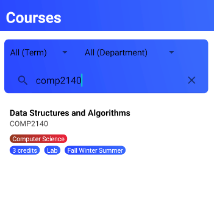
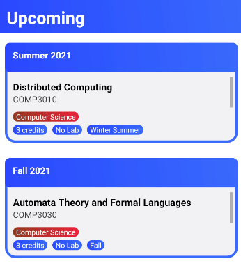
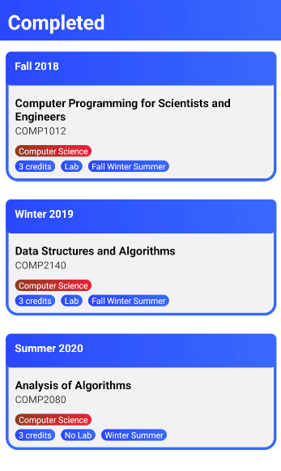

Functionality
-
It allows the user to search courses for any department (ComputerScience and Mathematics ) to see which courses are offering in a particular semester and does it have a lab to take for that course.

-
It allows the user to Plan for any department (ComputerScience and Mathematics) user can select and finalize their Courses for their UpComing semesters.

-
Also it allows if the user had taken a courses for the current semester and once it is completed the user has chance to view the list of semster in the completed semester.
